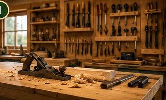
Getting Started With Woodworking
Woodworking can look intimidating when you see a professional workshop filled with table saws, routers, planers, clamps, sanders and other machines. The good news is that a beginner does not need all of that equipment to start learning.
A practical beginner woodworking setup can begin with a small collection of reliable hand tools, one or two useful power tools, a stable work surface and appropriate safety equipment. The most important skills are learning how to measure accurately, make controlled cuts, assemble pieces correctly and finish projects carefully.
This guide focuses on woodworking tools for beginners and covers the equipment, workspace and basic project knowledge that can help someone start without overspending on tools.
1. What Woodworking Tools Does a Beginner Need?
The ideal beginner tool collection depends on the type of woodworking you want to do. Someone making small boxes and shelves will need different equipment from someone building larger furniture.
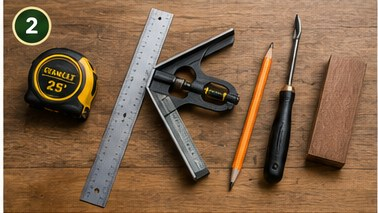
A useful starter collection can include a tape measure, combination square, marking pencil, hand saw or suitable powered saw, drill and driver, clamps, screwdrivers, sanding supplies and a stable work surface.
Basic hand tools
- Tape measure
- Combination square
- Woodworking pencil or marking tool
- Hand saw suitable for your projects
- Clamps
- Screwdrivers
- Utility knife
- Sandpaper and sanding block
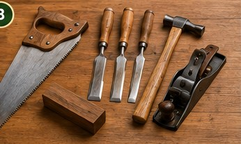
Useful power tools
- Cordless drill and driver
- Basic drill and driver bit set
- Jigsaw for suitable beginner projects
- Random orbital sander when your projects justify it
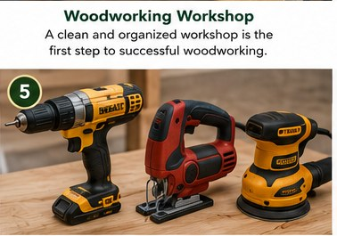
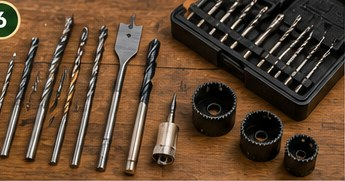
2. Hand Tools vs. Power Tools for Beginners
Both hand tools and power tools have a place in woodworking. Hand tools can help beginners understand how wood behaves and encourage careful, controlled work. Power tools can save time once you understand how to use them safely.
For example, a hand saw can teach you how to follow a marked line, while a powered saw may make certain cuts faster. A drill can make assembly easier, but it still requires accurate measuring and controlled handling.
There is no rule saying that a beginner must choose one category. A balanced starter collection often works best.
3. How Much Does a Beginner Woodworking Setup Cost?
There is no single correct woodworking budget. Costs depend on the projects you want to build, the tools you already own and whether you purchase new or used equipment.
Instead of buying a large shopping list, start with the minimum tools needed for your first few projects. A beginner building a small shelf, for example, may need measuring tools, a saw, a drill, clamps and sanding supplies. Specialized machines can be added later.
4. Choosing Wood for Beginner Projects
The material you choose can make a beginner project much easier or much harder. Commonly available boards can be convenient for learning because you can focus on measuring, cutting, joining and finishing instead of working with unusually difficult materials.
Beginners should also pay attention to board condition. Look for reasonably straight boards without excessive warping, major cracks or damage that could make accurate construction difficult.
Before cutting, inspect your material and plan the required dimensions. Good preparation can prevent unnecessary waste.
5. Clamps Are More Important Than They Look
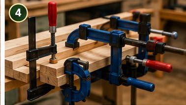
Beginners sometimes underestimate clamps. They are extremely useful when gluing, positioning or holding pieces securely while fastening them.
A small selection of appropriately sized clamps can make assembly much easier. They can help keep parts aligned while glue sets and reduce movement during certain operations.
Clamps are not a substitute for safe workholding. Always make sure the workpiece is properly supported and follow the instructions for the tools you are using.
6. Sanding and Surface Preparation
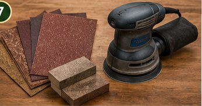
Sanding is often the step that turns a rough beginner project into a cleaner finished piece. You can start with sanding blocks and abrasive paper before deciding whether you need a powered sander.
The goal is not simply to sand as quickly as possible. Use an appropriate grit for the condition of the surface and progress gradually when a smoother finish is required.
7. A Simple Workbench or Work Surface
You do not need a professional woodworking shop to get started. What you need is a stable surface that lets you measure, cut, drill and assemble safely.
A sturdy bench, folding work table or suitable portable work surface can be enough for many beginner projects. As your projects become larger, you can improve your workholding setup.
Good organization also matters. Keep measuring tools, fasteners, clamps and frequently used hand tools where they can be reached easily.
8. Woodworking Safety for Beginners
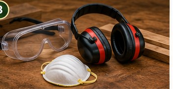
Woodworking involves sharp edges, moving tools, dust, noise and potentially flying debris. Safety should therefore be part of the setup from the beginning.
- Wear suitable eye protection when cutting, drilling or sanding.
- Use hearing protection around loud power tools.
- Keep your work area reasonably clean and controlled.
- Secure workpieces before cutting, drilling or sanding.
- Read the manufacturer's instructions before operating a tool.
- Keep hands away from moving cutting surfaces.
- Do not rush an operation you have not practiced.
9. Beginner-Friendly Woodworking Project Ideas
Your first woodworking project should teach useful skills without requiring a complicated tool collection. Simple shelves, small boxes, planters, organizers and basic benches can provide practice with measuring, cutting, drilling, assembly and sanding.
Look for projects with clear measurements, a manageable number of parts and construction steps you understand. A project that is slightly easier than your current skill level is often better for learning than one that is far too complicated.
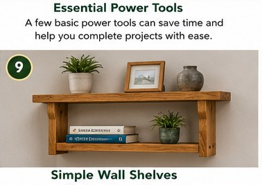
Simple Wall Shelves
A useful first project for practicing measuring, cutting and basic assembly.
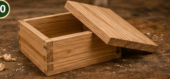
Small Wooden Box
A compact project for learning simple joints, assembly and finishing.
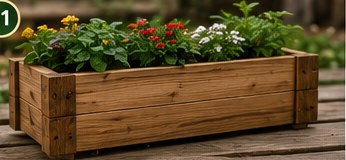
Wooden Planter Box
A practical project that teaches repeated measurements and straightforward assembly.
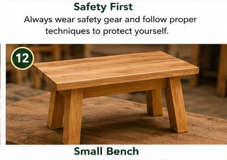
Small Bench
A simple furniture project for practicing strong assembly and accurate measurement.
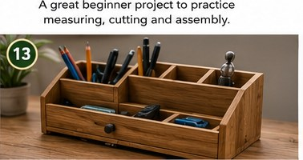
Desk Organizer
A small project that combines cutting, assembly and finishing.
10. Why Good Woodworking Plans Matter
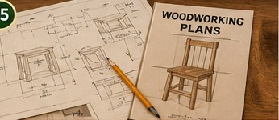
A woodworking project becomes much easier to manage when you know the dimensions, materials, cutting sequence and assembly order before starting.
Good plans can help beginners understand how individual pieces fit together and what tools or materials may be required. They can also reduce guesswork when planning a project.
One resource beginners may want to investigate is Ted's Woodworking, which provides a large collection of woodworking projects and plans. Check the official website for the current contents, pricing and terms before making a purchase.
Reference: Official Ted's Woodworking website
Our Review of Ted's Woodworking
If you are considering a large woodworking-plan library, it is worth looking at the offer from a practical beginner's perspective rather than assuming that a larger collection automatically means it is better for everyone.
What we like: The main attraction is the broad collection of woodworking project ideas and plans presented as one resource. Someone who enjoys building different types of projects may find a larger library useful for inspiration and planning.
What to keep in mind: A large library is not automatically the best choice for someone who only wants one simple project. Beginners should consider whether the available plans match their interests, tools, workspace and current skill level.
Customer feedback: The official website publishes customer testimonials. Testimonials represent individual experiences, so they should be considered along with the actual offer details and your own requirements.
11. Beginner Woodworking Tool Checklist
If you are starting from almost nothing, this is a practical place to begin:
- Tape measure
- Combination square
- Woodworking pencil or marking tool
- Beginner-friendly saw
- Cordless drill and driver
- Basic drill and driver bit set
- A few useful clamps
- Sandpaper and sanding block
- Stable work surface
- Appropriate eye protection
- Hearing protection for loud tools
12. How to Build Your Workshop Gradually
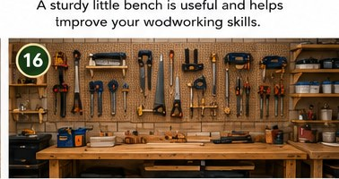
A good way to grow a workshop is to let each project teach you what you need next. If you repeatedly struggle with a certain operation, research the technique and consider whether a new tool would genuinely make that task easier.
This approach can also prevent a common beginner problem: owning expensive tools that spend most of their time unused. Skills, accuracy and good project planning are more valuable than having the largest tool collection.
When Should You Add Advanced Tools?
Tools such as a table saw, router, planer or other specialized equipment can become useful as projects become larger or more demanding. Beginners usually do not need to purchase every advanced machine immediately.
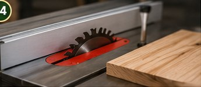
Add specialized equipment when it solves a recurring problem in the projects you actually want to build, and always learn the safety requirements before using it.
Frequently Asked Questions About Beginner Woodworking
What woodworking tools should a beginner buy first?
Start with measuring and marking tools, a suitable saw, a drill and driver, clamps, sanding supplies and a stable work surface. Add specialized tools when your projects require them.
Can I start woodworking without a professional workshop?
Yes. Many beginner projects can be completed with a modest collection of tools and a suitable, stable work surface.
What is a good first woodworking project?
Simple shelves, small boxes, organizers, planters and basic benches can provide useful practice without requiring a large tool collection.
Do beginners need expensive power tools?
Not necessarily. Beginners can learn many important woodworking skills with basic hand tools and a small number of versatile power tools.
Are woodworking plans useful for beginners?
Yes. Clear plans can make dimensions, materials, cutting steps and assembly order easier to understand.
Final Thoughts
Getting started with woodworking does not require a giant workshop or a room full of professional machines. A small group of dependable tools, a stable work surface, good safety habits and practical project planning can take you a long way.
The best beginner woodworking setup is not necessarily the one with the most tools. It is the setup that helps you complete projects safely, accurately and confidently while giving you room to improve.
If you are interested in a larger collection of woodworking project ideas, review the current information on the official Ted's Woodworking website and decide whether the available resources match your goals and experience level.
Explore More Woodworking Project Ideas
Interested in a larger library of woodworking projects and plans? Review the current offer and decide whether it fits your experience, workspace and project goals.
Explore Woodworking PlansAffiliate link: We may receive a commission if you purchase through this link, at no additional cost to you.